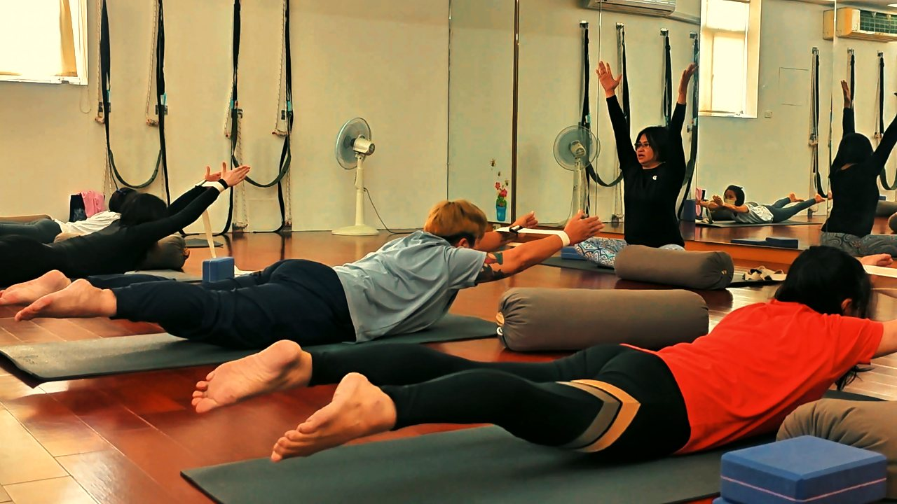

為什麼你按摩完，隔天又緊回去了？

- 按摩後又緊，不代表你不夠努力，也不能直接歸因為「前面太緊、後面太弱」。
- 先觀察舒服維持多久、什麼情境又緊，以及是否影響日常活動。
- 下一步依需求選擇休息、活動調整、運動指導或醫療評估，沒有所有人通用的順序。
按摩時終於鬆了一點，隔天坐回辦公桌，熟悉的緊又回來。很容易懷疑：「是不是按得不夠深？還是我的身體特別難處理？」先不用急著責怪自己。當下舒服是真的；這份舒服為什麼沒有維持，也值得另外看。
當下放鬆，和之後是否再緊，是兩個問題
NCCIH 的研究整理指出，按摩對部分頸肩疼痛可能有短期幫助，但研究結果與適用情況有限。這不表示每個人的反應都一樣，也不能把按摩研究直接套用到所有筋膜槍或自行按壓方式。
別只用「前緊後弱」解釋所有反覆緊
工作與照顧家人的負荷、長時間維持姿勢、睡眠、壓力與近期活動，都值得一起詢問。這些是觀察線索，不是隔著文章就能確認的原因。單憑「隔天又緊」，無法判斷你需要放鬆哪條肌肉或加強哪個部位。
把「又緊了」記得更具體一點
例如：「早上還好，連續用電腦後開始想揉右肩」「睡醒就緊，換枕頭也沒有明顯差別」。比起只記幾分緊，時間、左右側與當時在做什麼，更容易讓後續溝通有依據。你不需要監控自己整天，只記一個最常出現的情境就夠。
- 什麼時候回來：剛按完、當晚，還是隔天某項活動後？
- 有沒有變化：頻率、程度、持續時間，或影響的活動是否不同？
- 有沒有其他不適：若出現持續疼痛、麻木、無力或活動明顯受限，不要只用按摩或文章自我判斷。
下一步，先看你真正需要的是什麼
如果只是想在忙碌後暫時放鬆，可以和服務人員討論反應；如果想建立規律活動，可以詢問適合的練習與可調整的幅度；如果症狀持續或影響生活，先做醫療評估。這幾種需求可能並存，不用把按摩與運動變成只能選一個的競爭。
若你在意的已不只是按摩後，而是平常反覆緊、越挺越累，可接著看肩頸一直緊，什麼時候不該再一直拉伸；這篇先把按摩後的反應說清楚。
今天先少一點硬撐，多一點可描述的觀察
在舒適範圍換姿勢、短暫走動，不必強迫肩胛往後往下夾到標準位置。下次和老師或醫療人員討論時，帶著「什麼情境回來」這個線索，比只說「我全身都很緊」更容易開始對話。
想把模糊的緊，整理成可以討論的線索？
檢測可提供肩線、頭部位置等影像角度參考，再由老師當面討論。角度不能直接測出肌力或診斷病因；也可以先看檢測內容與到店流程，再決定是否符合需求。
預約首次 NT$299 AI 體態檢測本文為一般運動與身體觀察資訊，非醫療診斷或治療；持續或加劇的不適、近期受傷與特殊健康狀況，請先向合格醫療專業人員詢問。
常見問題
按摩完隔天又緊，是不是按摩沒有效？
不一定。當下舒服與隔天維持多久是不同問題；反覆緊不能單獨證明按摩無效，也不能用它判定是哪一條肌肉太弱。
要換更大力的按摩，才能維持久一點嗎？
不應只用力道判斷。先記錄緊繃回來的時間與活動情境，並向提供服務的人說明反應；有持續或加劇的不適，應尋求醫療評估。
AI 體態檢測能找出肩頸緊的病因嗎？
不能。影像角度可提供站姿觀察的參考，但不能直接測出肌力、判定哪裡緊弱或診斷病因。
今天可以先做什麼？
先換個姿勢、在舒適範圍活動，記下一個最容易緊起來的情境；不必為了把姿勢做好而一直夾肩、硬撐。